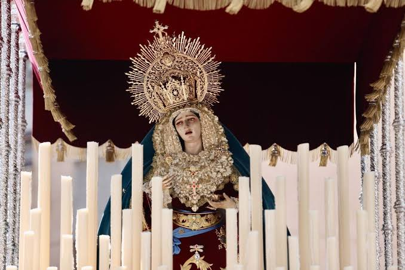
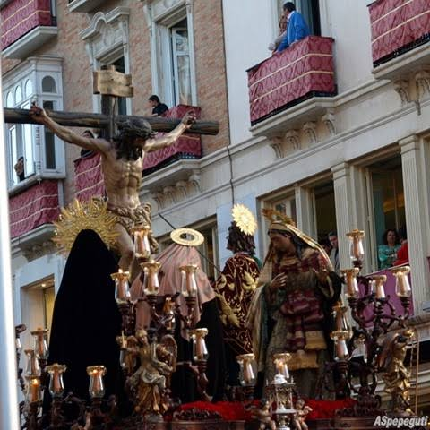
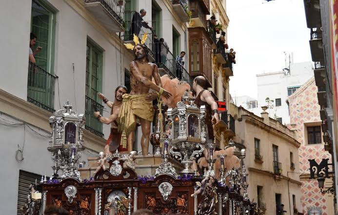
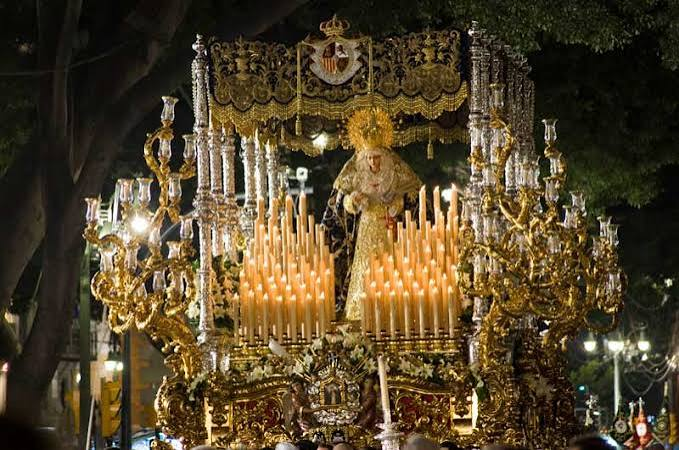
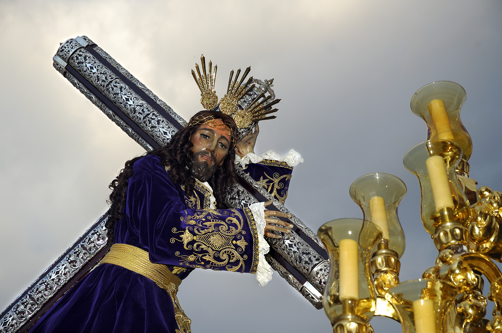
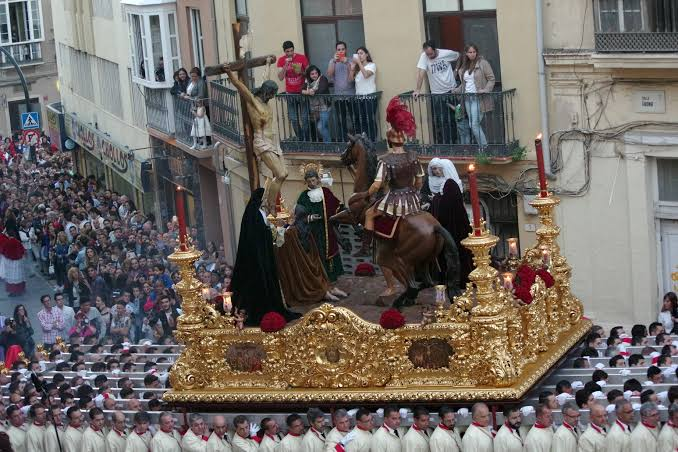
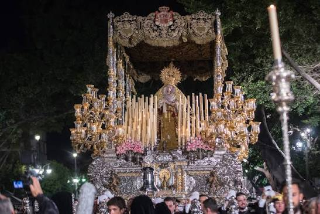

Historia, devoción y el caminar del Cautivo
El Miércoles Santo marca el ecuador de la semana con momentos de máxima suntuosidad y fervor. Es la noche de los grandes tronos y de las corporaciones más populosas de la ciudad, destacando la masiva procesión de Nuestro Padre Jesús de la Columna ("El Gitano") y la imponente salida de la Cofradía de El Rico. Junto a ellas, Mediadora, Salesianos, Fusionadas y la Paloma dotan al centro histórico de un ambiente único e inolvidable.

Mediadora
Procesiona desde las Delicias en la zona oeste de la ciudad. Destaca por el clasicismo de su cortejo y la singular iconografía del abrazo místico de la Virgen.

Salesianos
Hermandad nacida en el colegio salesiano. Recrea el misterio de las palabras de Cristo en la cruz a su Madre y a San Juan, con un desfile sobrio y elegante.

Fusionadas
Establecida en la Iglesia de San Juan, es la cofradía con más tronos de la Semana Santa. Reúne cuatro corporaciones históricas y destaca por la enorme variedad y riqueza de sus secciones.

Paloma
Una de las procesiones más alegres. Durante su recorrido se sueltan palmas y palomas vivas que vuelan alrededor del precioso trono de la Virgen de la Paloma.

El Rico
Protagoniza el momento más famoso del día: gracias a una pragmática real de Carlos III, Jesús El Rico libera solemnemente a un preso de la cárcel cada Miércoles Santo.

Sangre
La archicofradía más antigua de la ciudad (siglo XVI). El color rojo carmesí inunda las calles y destaca el espectacular patrimonio histórico y artístico de sus enseres.

Expiración
Vinculada fuertemente a la Guardia Civil. El trono de la Virgen de los Dolores es una obra maestra de la orfebrería y su peso exige el esfuerzo de más de 250 portadores.